Currently at Juspay, designing 0→1 enterprise products across payment recovery, observability and merchant operations.
Product Designer, Hyperswitch suite
Designing enterprise payment products through several 0→1 initiatives, turning complex payment systems into clear decisions for merchants.
I took a payment cost observability platform from internal concept to enterprise pilots and a demo to Apple.
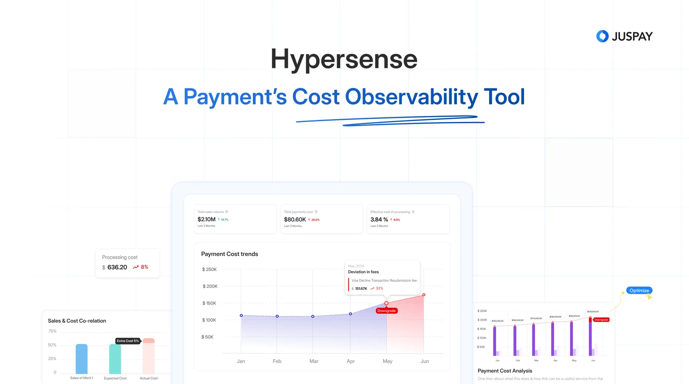
I designed an exception platform that shortens the path from investigation to resolution for reconciliation analysts.
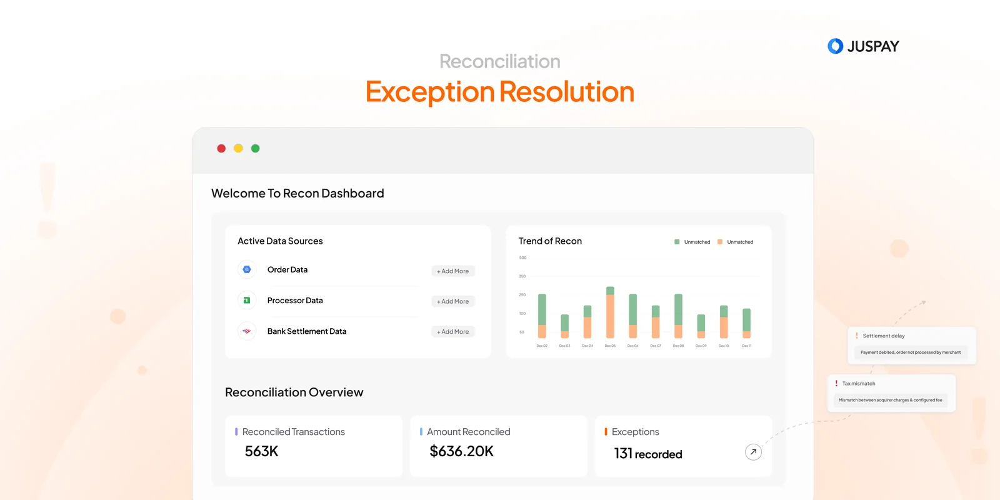
Associate Product Designer, workforce mobile apps
Designing mobile experiences that made learning and daily work more intuitive and reliable for frontline workers.
I redesigned learning for blue-collar workers with low digital literacy, around role-based content at scale.
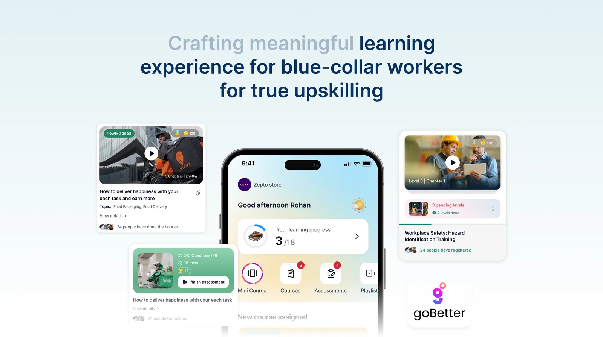
I simplified a friction-heavy daily attendance flow into something faster and field-friendly for frontline workers.
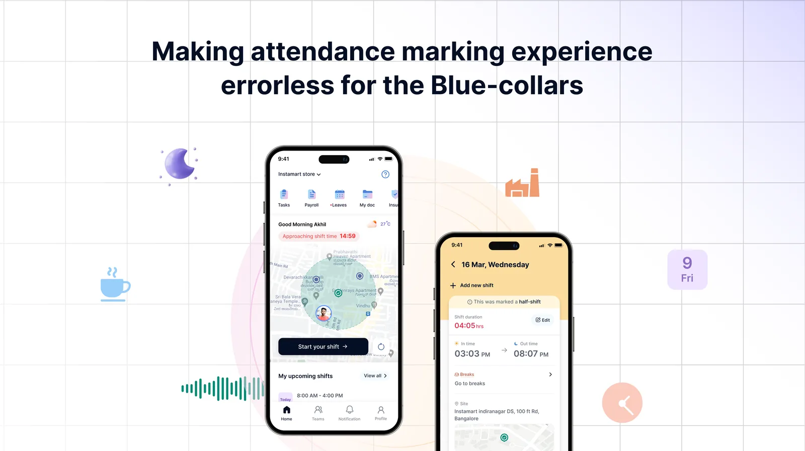
Ideas I take from a first sketch to something that works, designing and building them myself.
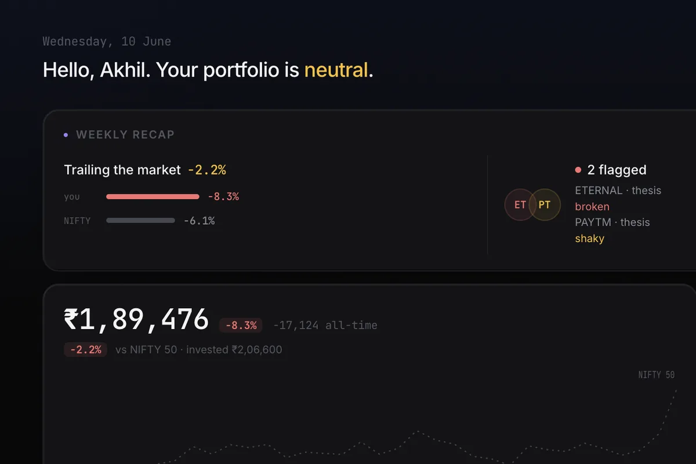
HoldrIn progress A tracker that keeps a long-term investor's portfolio, market moves and key updates in one place.I'm a Product Designer at Juspay, where I work on enterprise payment products. My work revolves around simplifying complex workflows and building experiences that help people make better decisions.
Over the last few years, I've worked across workforce-tech and fintech, designing products for both frontline workers and enterprise teams. While the domains have changed, the challenge has remained the same: turning complexity into clarity.
I've always been curious about how things work. That curiosity is what led me to design, and it continues to shape how I approach problems today.
Outside of work, you'll usually find me exploring new places, spending time in the hills, trying out new recipes, visiting galleries, or occasionally chasing a bit of adrenaline on a racetrack. More recently, I've also been spending time building a few things of my own.
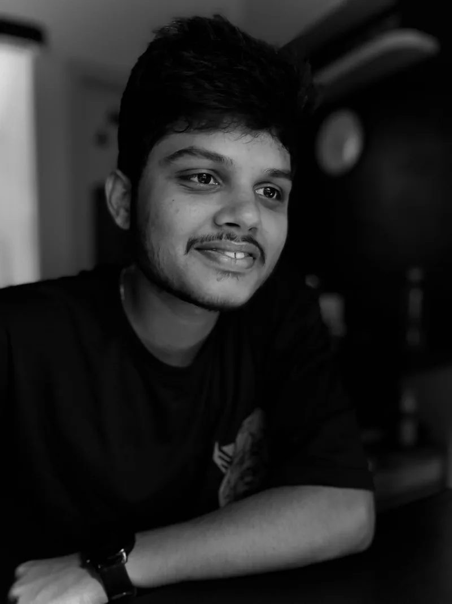
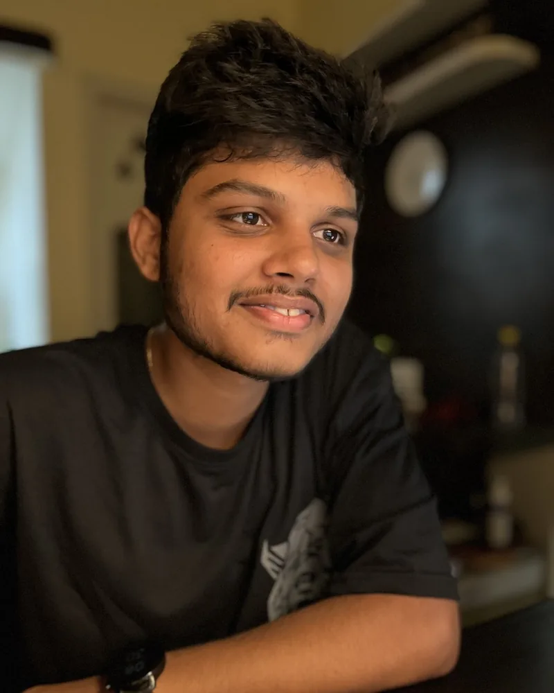
…and a few frames from outside the canvas.
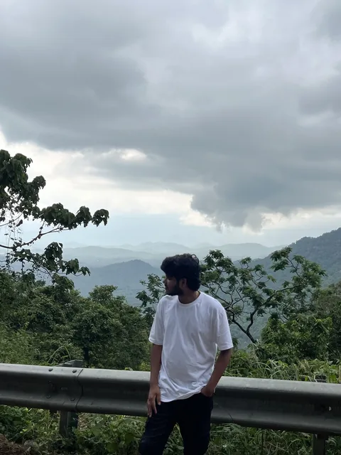
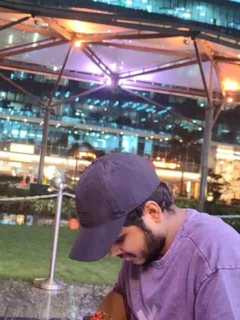
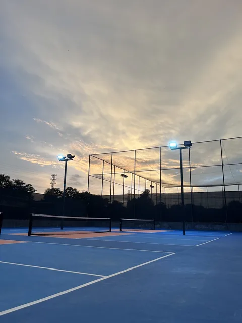
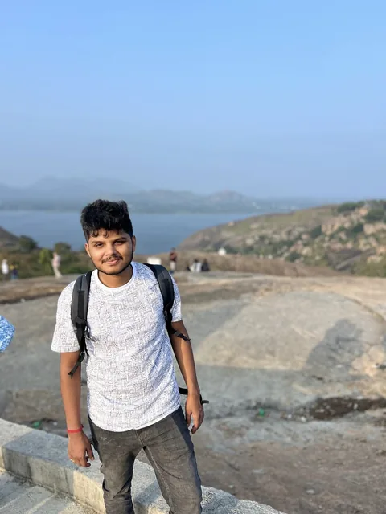
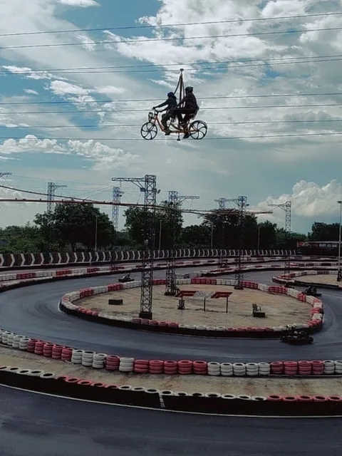
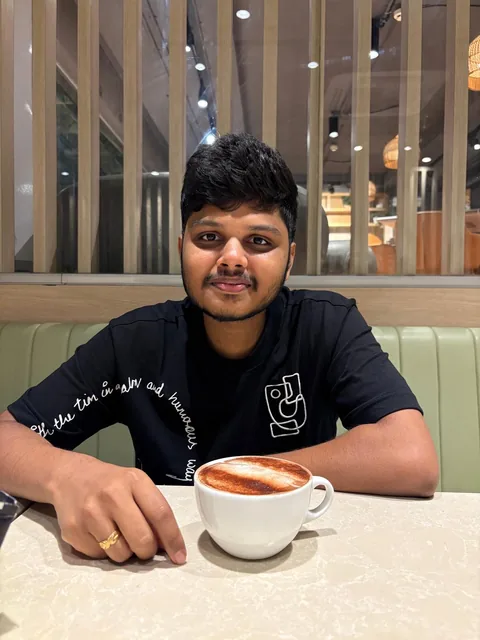
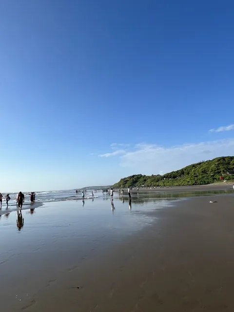
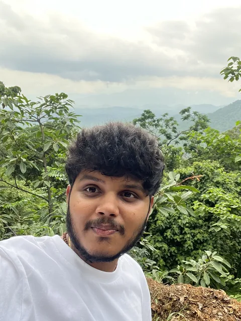
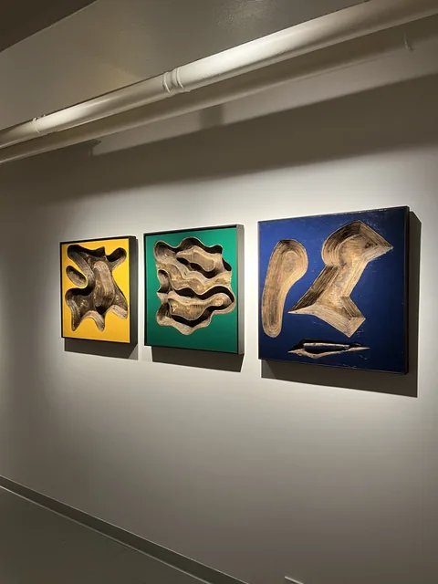
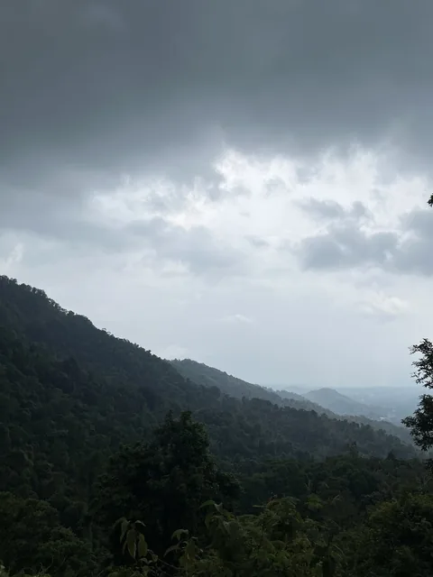
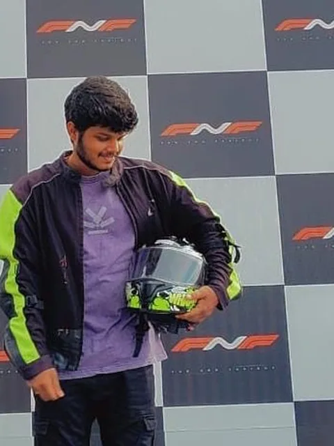
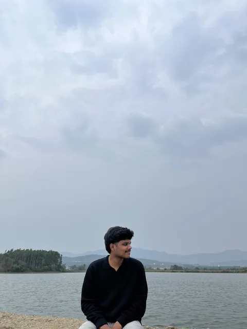